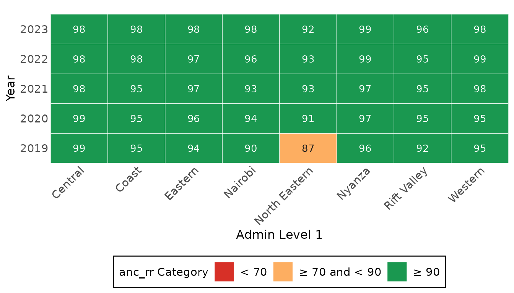
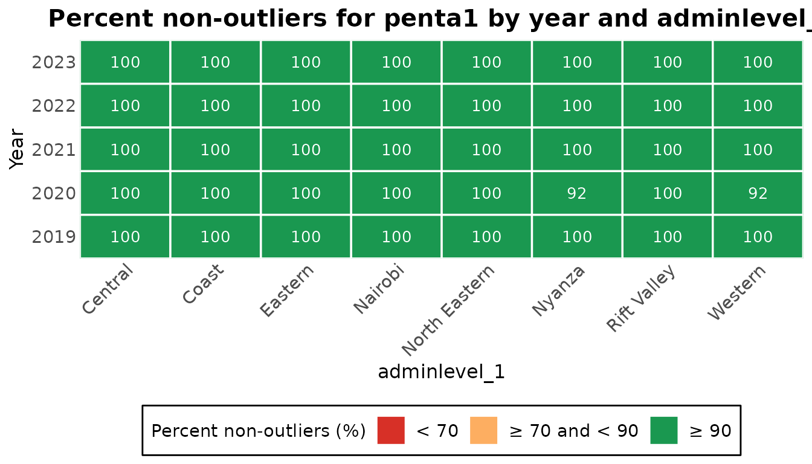
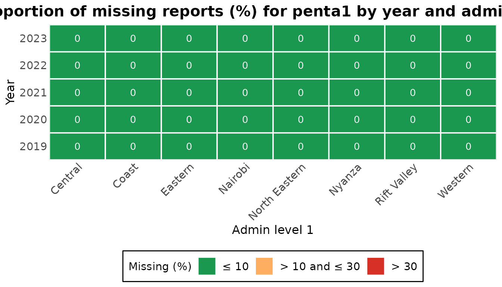
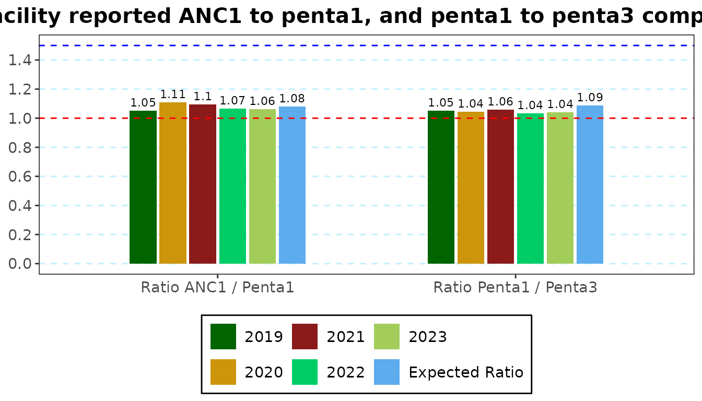
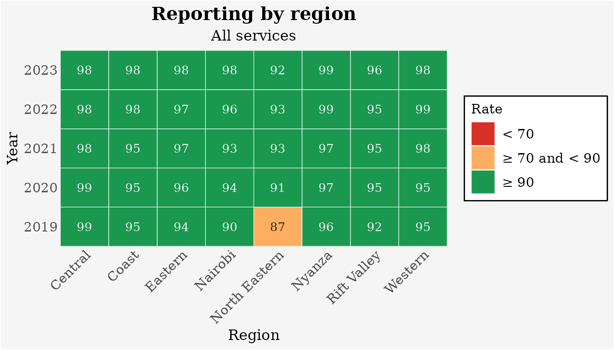
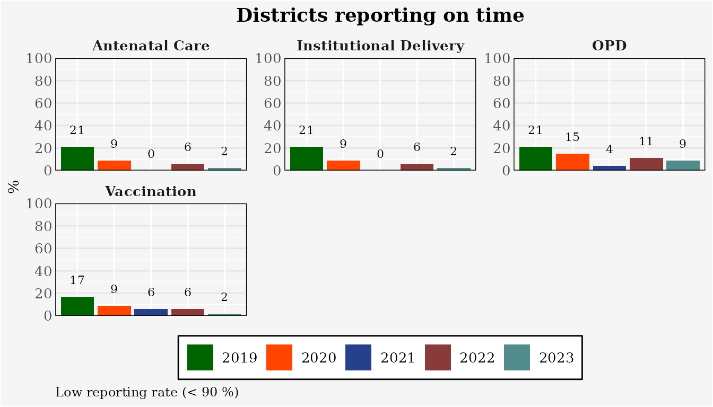

Before coverage is computed, the Countdown analysis asks four questions of the facility data: were the reports sent, are there values that cannot be right, are values missing, and do related indicators agree. This guide goes through the function for each, on the example dataset.
library(cd2030.core)
cache <- load_cache_data(system.file("extdata", "kenya.xlsx", package = "cd2030.core"))
#> ℹ Loading Excel "kenya.xlsx" for parts
#> ! The following columns are empty: anc_1trimester, under5_deaths, total_deaths, ipv2, measles_cases
#> ℹ Successfully loaded and cleaned data
#> ℹ Auto-detect candidates (|group|): vaccine=19, rmncah=28 -> selected rmncah
data <- cache$countdown_dataThree things are the same for every check:
-
The level.
admin_levelis"national","adminlevel_1"(region) or"district", andregionkeeps one region. -
The result is a table with a class of its own,
which gives it a caption and usually a
plot()method. - The threshold is the reporting rate a district is expected to reach, in percent. 90 is used here.
Reporting rates
The reporting rate is the share of expected monthly reports that were received, for each group of services.
calculate_average_reporting_rate(data)
#> # Table 1a: Annual average reporting rates for all indicators, by year
#> # A tibble: 5 × 6
#> year anc_rr idelv_rr vacc_rr opd_rr mean_rr
#> <int> <dbl> <dbl> <dbl> <dbl> <dbl>
#> 1 2019 94 94 94 95 94
#> 2 2020 96 96 95 96 96
#> 3 2021 96 96 96 96 96
#> 4 2022 97 97 97 96 97
#> 5 2023 97 97 98 97 97By region, as a chart:
plot(calculate_average_reporting_rate(data, admin_level = "adminlevel_1"))
calculate_district_reporting_rate() counts districts:
the percentage whose reporting rate reaches the threshold.
calculate_district_reporting_rate(data, threshold = 90)
#> # Table 1b: District reporting rates meeting threshold >= 90 by year
#> # A tibble: 5 × 6
#> year low_anc_rr low_idelv_rr low_vacc_rr low_opd_rr low_mean_rr
#> <int> <dbl> <dbl> <dbl> <dbl> <dbl>
#> 1 2019 79 79 83 79 80
#> 2 2020 91 91 91 85 90
#> 3 2021 100 100 94 96 97
#> 4 2022 94 94 94 89 93
#> 5 2023 98 98 98 91 96Extreme outliers
A monthly value is an extreme outlier when it is more than five median absolute deviations from the district’s median for that indicator. The summary gives the percentage of values that are not outliers, so higher is better.
outliers <- calculate_outliers_summary(data, admin_level = "adminlevel_1")
plot(outliers, selection_type = "heat_map", indicator = "penta1")
calculate_district_outlier_summary() gives the
percentage of districts with no extreme outlier in the year, and
list_outlier_units() returns the monthly values with their
bounds, to find the months concerned.
calculate_district_outlier_summary(data)[, c("year", "anc1_outlier5std", "penta1_outlier5std", "penta3_outlier5std")]
#> # Table 2b: Percentage of districts with no extreme outliers, by year
#> # A tibble: 5 × 4
#> year anc1_outlier5std penta1_outlier5std penta3_outlier5std
#> <int> <dbl> <dbl> <dbl>
#> 1 2019 97.9 97.9 93.6
#> 2 2020 76.6 83.0 70.2
#> 3 2021 87.2 97.9 85.1
#> 4 2022 97.9 100 100
#> 5 2023 100 97.9 97.9Missing values
Completeness is the percentage of monthly values that are present.
completeness <- calculate_completeness_summary(data, admin_level = "adminlevel_1")
plot(completeness, indicator = "penta1")
calculate_district_completeness_summary() gives the
percentage of districts with no missing value, and
list_missing_units() names the districts and months where
an indicator is missing.
list_missing_units(data, indicator = "low_bweight")
#> # A tibble: 144 × 4
#> adminlevel_1 district year month
#> <chr> <chr> <int> <ord>
#> 1 Central Nyeri 2022 January
#> 2 Central Nyeri 2022 February
#> 3 Central Nyeri 2022 March
#> 4 Central Nyeri 2022 April
#> 5 Central Nyeri 2022 May
#> # ℹ 139 more rowsConsistency between indicators
Some indicators should move together: nearly every woman who attends a first antenatal visit has a child who receives a first dose of pentavalent vaccine, and the first dose is a little more common than the third. The ratio of each pair is compared with the ratio expected from survey coverage, the last row of the table.
cache$ratios_summary
#> # Table 3a.b: Ratios of ANC1/Penta1, Penta1/Penta3, and OPV1/OPV3 by Year
#> # A tibble: 6 × 6
#> year anc1 penta1 penta3 `Ratio anc1/penta1` `Ratio penta1/penta3`
#> <chr> <dbl> <dbl> <dbl> <dbl> <dbl>
#> 1 2019 1429512 1359967 1293250 1.05 1.05
#> 2 2020 1465266 1323091 1266781 1.11 1.04
#> 3 2021 1547683. 1411557 1332230 1.10 1.06
#> 4 2022 1479978. 1387864 1340620 1.07 1.04
#> 5 2023 1500341 1410586 1355282 1.06 1.04
#> 6 Expected Ratio NA NA NA 1.08 1.09
plot(cache$ratios_summary)
The overall score
calculate_overall_score() brings the checks together,
one row per measure and one column per year. The last row is the year’s
data quality score.
score <- calculate_overall_score(data, threshold = 90)
score[, c("no", "Data Quality Metrics", "2021", "2022", "2023")]
#> # A tibble: 10 × 5
#> no `Data Quality Metrics` `2021` `2022` `2023`
#> <chr> <chr> <dbl> <dbl> <dbl>
#> 1 1a % of expected monthly facility reports (national) 95.9 96.4 96.9
#> 2 1b % of districts with completeness of facility reporting >= 90 97 93 96
#> 3 1c % of districts with no missing values for the 4 forms 84.9 84.0 84.7
#> 4 2a % of monthly values that are not extreme outliers (national) 97.8 98.8 96.1
#> 5 2b % of districts with no extreme outliers in the year 88.8 91.7 87.2
#> 6 3a Ratio anc1/penta1 1.10 1.07 1.06
#> 7 3b Ratio penta1/penta3 1.06 1.04 1.04
#> 8 3c % district with anc1/penta1 in expected ranged 91.5 87.2 85.1
#> 9 3d % district with penta1/penta3 in expected ranged 97.9 87.2 93.6
#> 10 4 Annual data quality score 93.4 91.2 91.4Changing how a chart looks
Every chart in the package takes the same arguments for its text:
title, subtitle, caption,
x_title, y_title and
legend_title. Anything else about its look is a chart
option, given by name: the background, fonts, sizes, the legend, the
grid, the colours.
rates <- calculate_average_reporting_rate(data, admin_level = "adminlevel_1")
plot(rates,
title = "Reporting by region", subtitle = "All services", x_title = "Region", legend_title = "Rate",
background_color = "grey96", font_family = "serif", legend_position = "right")
To give several charts one look, make the options once and pass them
as options.
look <- cd_chart_options(font_family = "serif", background_color = "grey96", text_scale = 0.9)
plot(calculate_district_reporting_rate(data, threshold = 90), title = "Districts reporting on time", options = look)
?cd_plot_arguments describes the shared arguments and
?cd_chart_options lists every option.
Through the dataset object
The CacheConnection holds each of these tables, computed
once with the threshold it has stored and kept until something they
depend on changes. This is what the apps’ pages read.
cache$set_performance_threshold(90)
cache$reporting_rate_national
#> # Table 1a: Annual average reporting rates for all indicators, by year
#> # A tibble: 5 × 6
#> year anc_rr idelv_rr vacc_rr opd_rr mean_rr
#> <int> <dbl> <dbl> <dbl> <dbl> <dbl>
#> 1 2019 94 94 94 95 94
#> 2 2020 96 96 95 96 96
#> 3 2021 96 96 96 96 96
#> 4 2022 97 97 97 96 97
#> 5 2023 97 97 98 97 97?CacheConnection lists them all
(reporting_rate_*, completeness_*,
outliers_*, ratios_summary,
overall_score).
Acting on what you find
-
A year too poor to use can be left out of the
analysis:
cache$set_excluded_years(2019). -
Under-reporting, outliers and missing values are
corrected by adjustment, the next step:
vignette("coverage"). -
A written summary:
export_report(cache, report_presets("en")[["data_quality"]], "data-quality.docx")writes the standard data quality report as a Word document.